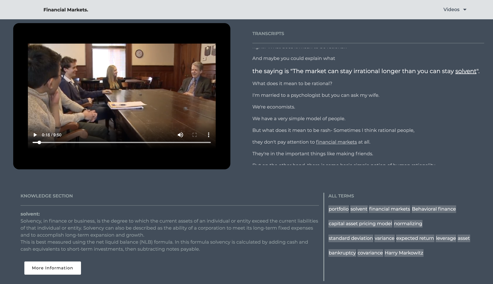
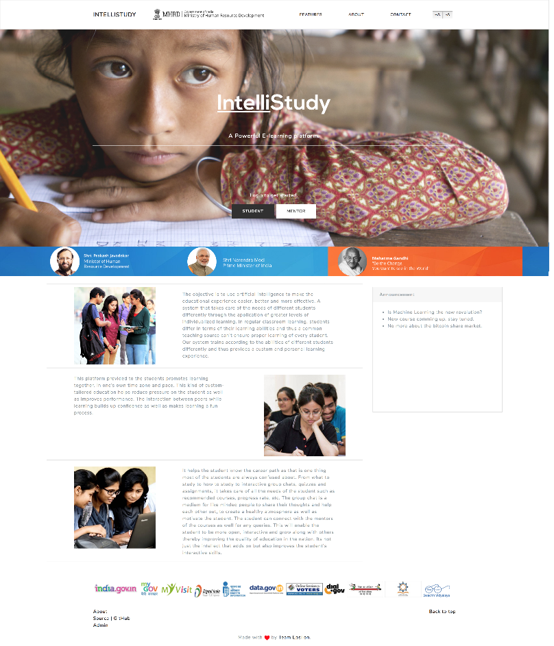
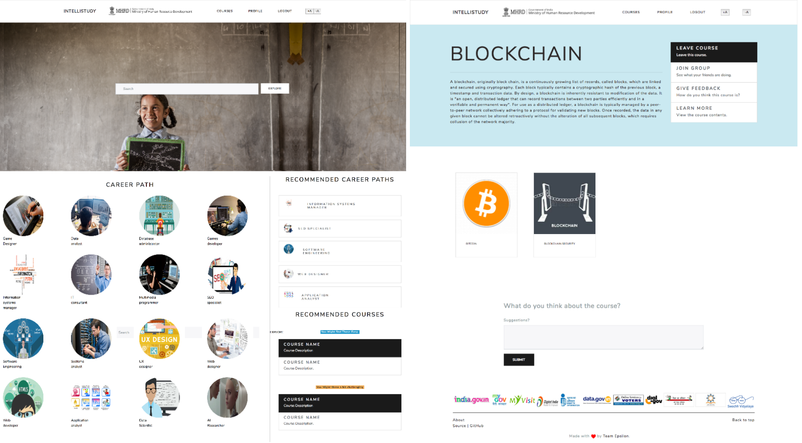
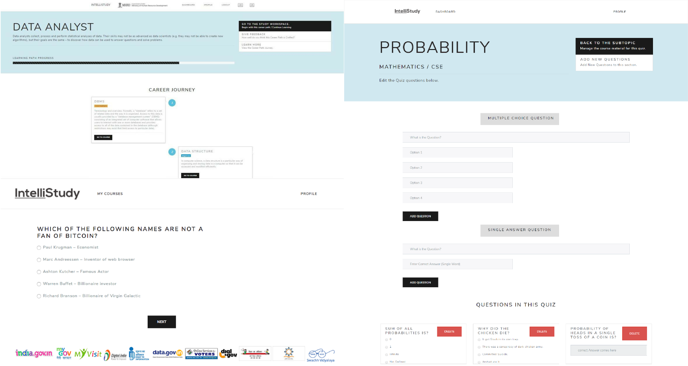
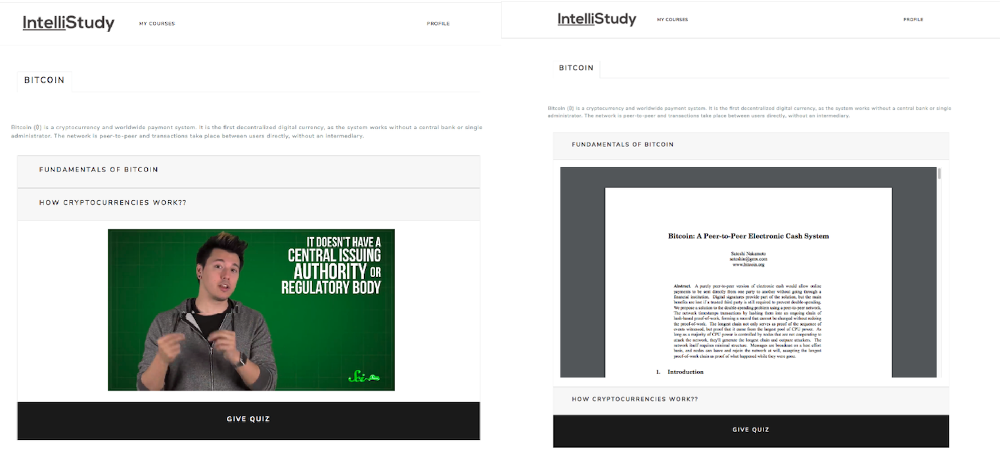

AI in Education
An interactive AVL-Tree Intelligent Tutoring System
It describes the new visual understanding based intelligent-state-feedback approach, for teaching the insertion algorithm for the AVL trees built using Cognitive Tutor Authoring Tools.
Highlights
Our aim is to supplement basic class lectures with an interactive intelligent tutoring system that integrates our proposed approach for better understanding.
Tags
Cognitive Tutor Authoring Tools, HTML.
Entity Linking on Subtitles to enhance E-learning
Work done under Dr. Omair Shafiq at Carleton University
Developed a novel intelligent interaction video-based model to enhance the student learning experience by linking the useful keywords in the course transcripts to knowledge bases using entity linking.

Highlights
The work done on entity linking till now has been generalised and focus more on linking the entities (mainly person, location, organisation) in a given piece of text without focusing on the general application. We want to focus on the usage of this model to improve e- learning.
Tags
Python.
Paper Under Review in International Journal of Artificial Intelligence in Education.
IntelliStudy
Qualified for the Grand Finale of Smart India Hackathon 2018 securing a spot among top 50 students out of 1 lakh participants.
A system to identify the level of understanding and provide learning as per the requirements of the student and to recommend courses and career paths using the combination of User – User Collaborative filtering, Collaborative filtering using Restricted Boltzmann Machines and 3 layered Neural Network.




Highlights
Recommending Career Path.
- For Recommending suitable careers, our model uses restricted Boltzmann Machine which have been stated to be computationally efficient for the dataset of a Hundred-Million entries.
- Based on the courses the student has been enrolled in, suitable career paths and additional courses required for those paths are recommended.
Recommending Courses
- Providing User-User based collaborative filtering for recommending relevant courses to the student.
- Based on the similarity of the scores between the users, the system recommends the most relevant courses suitable for the particular student.
- These courses are divided into two categories – Easy and Challenging.
Quizzes
- 3 Layered Neural networks to dynamically adjust the level of questions asked in the quizzes.
- Factors into consideration for determining the difficulty of the question (easy, medium, hard): Response time per question, Correctness and Average response time of all the previous users.
Tags
Django, Python, SQLite, Ajax, Bootstrap, jQuery, JavaScript, HTML5, SciPy, Numpy, Pandas, scikit-learn
Tenacity.AI
Achieved 2nd place in IBM Machine Learning hackathon
Web app that simplifies the process of gaining insights from videos. With the help of Emotional (Tone) and Speech to text analysis Watson API's, Tutors can monitor their Lecture Delivery Style. Also, they can generate transcripts (Real Time) of their video lectures. Further, with the help of Natural Language Understanding, it extracts useful Keywords from these transcripts and are automatically linked to Wikipedia thus provoking better learning by the students.
Highlights
- Tenacity.AI is a web app that simplifies the process of gaining Insights from Visual content(mp4) that is helpful for both Tutors and Students.
- With the help of Emotional(Tone) and Speech to text analysis, Tutors can Monitor their Lecture Delivery Style and productivity. Also, They can generate transcripts (Real Time) of their video lectures.
- Further, with the help of Natural Language Understanding, Tenacity.AI extracts useful Keywords from Lengthy Lectures or complicated Jargons and thus provokes better learning by the students. Each of these keywords generated in real-time are automatically linked to Wikipedia pages for further information.
Tags
Watson APIs, Bootstrap, Node.js, Angular JS, IBM Cloud Services, HTML5